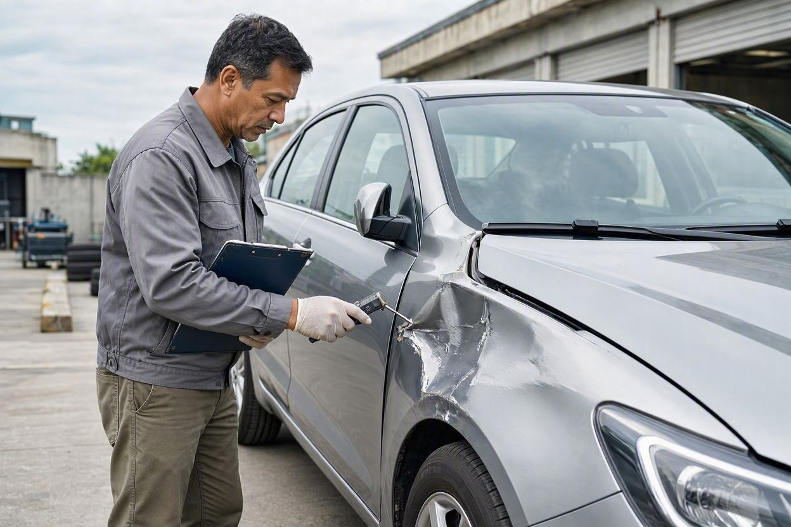
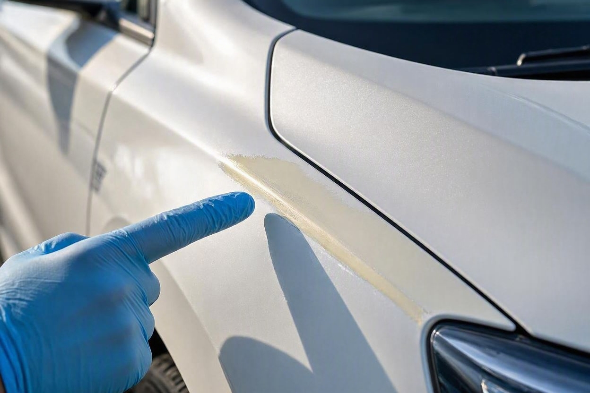
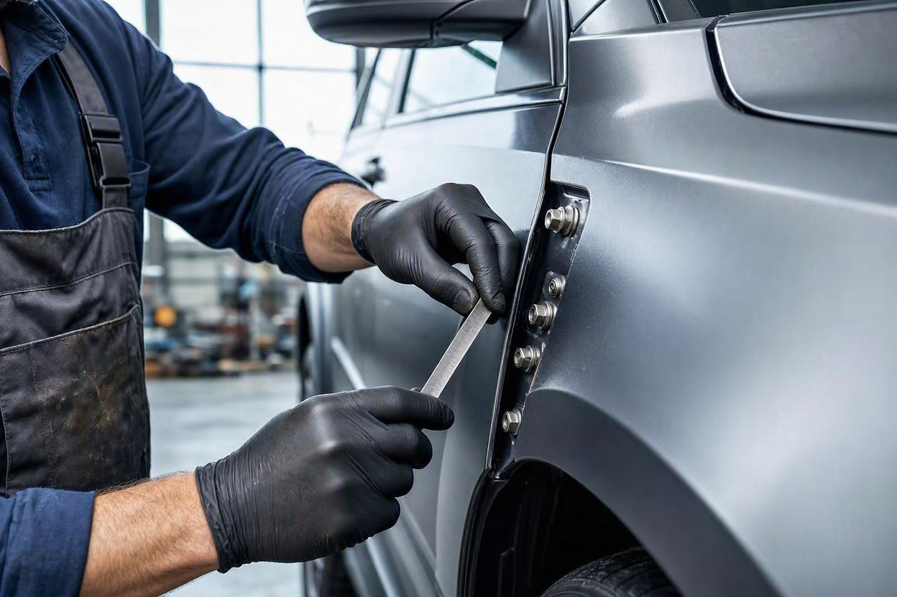
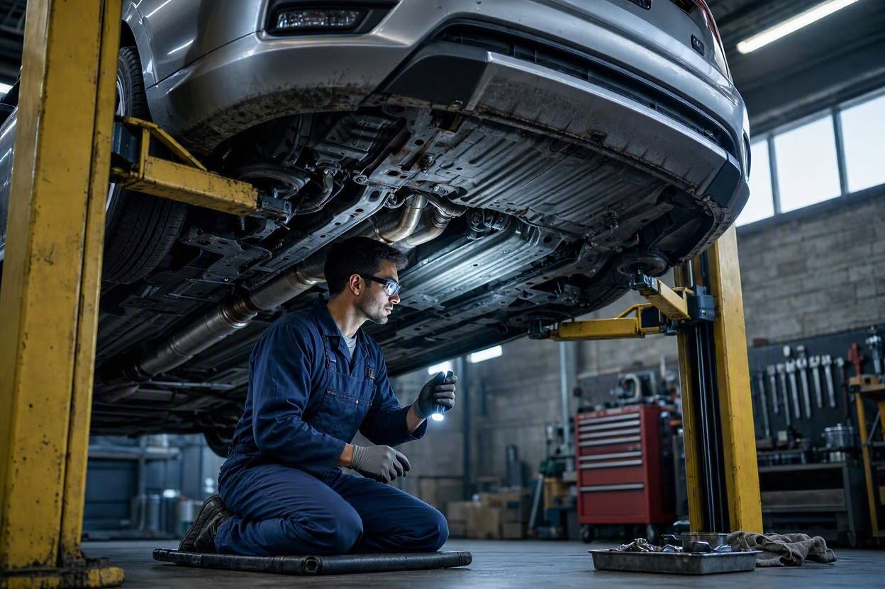

افت قیمت خودرو در تصادف چگونه محاسبه میشود؟
خودرویی که یک بار تصادف کرده، دیگر با قیمت سالم فروش نمیرود. اما این افت چقدر است و بر چه اساسی محاسبه میشود؟ پاسخ به سه عامل اصلی برمیگردد.
افت قیمت خودرو تصادفی بر اساس نوع و شدت آسیب محاسبه میشود، نه یک درصد ثابت. سه عامل تعیینکنندهاند: رنگشدگی، تعویض قطعه و آسیب شاسی. رنگ جزئی کمترین افت و آسیب شاسی بیشترین افت را دارد. درصد دقیق به مدل خودرو، محل آسیب و شرایط روز بازار بستگی دارد و با ابزار قیمتگذاری قابل برآورد است.
- افت قیمت تصادف یک عدد ثابت نیست؛ به نوع آسیب، محل و گستردگی آن بستگی دارد.
- سه عامل اصلی: رنگشدگی، تعویض قطعه و آسیب شاسی؛ بهترتیب از کماثر تا پراثر.
- رنگ یک لکه جزئی افت کمی دارد، اما رنگ گسترده چند قطعه افت را بیشتر میکند.
- آسیب شاسی بیشترین افت قیمت را ایجاد میکند و گاهی خودرو را از خرید خارج میکند.
- برای عدد دقیق، باید ارزش روز همان مدل با و بدون آسیب مقایسه شود.
افت قیمت بر چه مبنایی محاسبه میشود؟
افت قیمت یعنی اختلاف بین ارزش خودرو در حالت سالم و ارزش همان خودرو با سابقه تصادف. این عدد از مقایسه دو قیمت بهدست میآید، نه از یک فرمول ثابت. برای همین دو خودروی مشابه با یک نوع تصادف میتوانند افت متفاوتی داشته باشند. مجموعه مجموعه کارماچک این تفاوت را زیاد میبیند، چون عاملهای ریز زیادی روی قیمت نهایی اثر میگذارند.
سه عامل بیشترین نقش را دارند: میزان و محل رنگشدگی، اینکه چه قطعهای و چگونه تعویض شده، و مهمتر از همه سلامت شاسی. هرچه آسیب به بخش سازهای خودرو نزدیکتر باشد، افت بیشتر است. یک لکه رنگ روی گلگیر با یک شاسی کشیدهشده، دو دنیای متفاوت از نظر قیمت هستند.
نکته مهم اینجاست که بازار هم روی این عدد اثر میگذارد. تقاضای مدل، رنگ بدنه، سال ساخت و شرایط کلی بازار میتوانند افت را کم یا زیاد کنند. به همین دلیل برای رسیدن به عدد واقعی، بهتر است ارزش روز خودرو را با ابزار قیمتگذاری خودرو بسنجید تا برآورد به شرایط فعلی نزدیک باشد.
افت قیمت ناشی از رنگشدگی

رنگشدگی رایجترین عاملی است که خریدارها روی آن حساساند، اما همیشه پرافتترین نیست. مقدار افت به دو چیز بستگی دارد: چند قطعه رنگ خورده و به چه دلیل. یک خطوخش سطحی که فقط صافکاری و رنگ جزئی شده، افت کمی دارد. اما وقتی چند قطعه مجاور رنگ شده باشند، خریدار به تصادف بزرگتر شک میکند و افت بالا میرود.
تفاوت مهم بین رنگ بهدلیل خطوخش و رنگ بهدلیل ضربه است. رنگ ناشی از یک تصادف واقعی، معمولاً با تغییر شکل زیرکار همراه است و افت بیشتری میآورد. برای اینکه بدانید یک خودروی رنگشده اصلاً ارزش خرید دارد یا نه، راهنمای خودرو رنگ شده ارزش خرید دارد این موضوع را کاملتر باز کرده است.
افت قیمت ناشی از تعویض قطعه

وقتی قطعهای بهجای صافکاری تعویض شده، یعنی آسیب جدیتر بوده است. اما میزان افت به نوع قطعه بستگی دارد. قطعات پیچی مانند درب، گلگیر و کاپوت را میتوان بدون اثر روی سازه تعویض کرد، پس افتشان معمولاً متوسط است. مشکل جدی وقتی است که قطعه جوشخورده یا بخشی از بدنه اصلی تعویض شده باشد.
کیفیت قطعه هم مهم است. تعویض با قطعه اصلی و کارخانهای افت کمتری از قطعه متفرقه یا بازسازیشده دارد. خریدار باتجربه بین «درب تعویضی سالم و اصلی» و «درب تعویضی متفرقه» تفاوت قائل میشود و همین روی قیمت اثر میگذارد.
ارزش واقعی خودرو را دقیق بدانید
برآورد افت قیمت بدون بررسی دقیق آسیب، حدس است. کارشناسی تخصصی نوع و شدت آسیب را روشن میکند تا عدد افت واقعبینانه باشد.
شروع کارشناسی خودروافت قیمت ناشی از آسیب شاسی

آسیب شاسی جدیترین عامل افت قیمت است. شاسی سازه اصلی خودرو است و هر آسیبی به آن، روی ایمنی، رفتار خودرو در جاده و ارزش معامله اثر مستقیم میگذارد. حتی اگر شاسی بهخوبی کشیده و تعمیر شده باشد، سابقه آن روی قیمت میماند و افت قابلتوجهی ایجاد میکند.
شدت افت به محل و نوع آسیب شاسی بستگی دارد. یک لبه شاسی که کمی ضربه خورده با شاسی کشیدهشده یا بریدهوجوششده، تفاوت زیادی دارند. در آسیبهای سنگین شاسی، بعضی خریدارها اصلاً وارد معامله نمیشوند و همین موضوع، فروش را سخت و افت را بیشتر میکند. برای شناخت نشانههای این آسیب، راهنمای تشخیص شاسی ضربه خورده خودرو کمککننده است.
کارماچک خدمات کارشناسی خودرو را برای بررسی فنی، رنگ، بدنه و عوامل مؤثر بر ارزش معامله ارائه میدهد. فقط ایراد خودرو را شناسایی نمیکنیم؛ اثر آن روی هزینه تعمیر و ارزش واقعی معامله را هم مشخص میکنیم.
جدول مقایسه شدت افت قیمت
این جدول شدت نسبی افت را نشان میدهد، نه درصد دقیق. هدف این است که ببینید کدام نوع آسیب بیشترین اثر را روی قیمت دارد. درصد واقعی به مدل و بازار بستگی دارد.
| نوع آسیب | شدت افت قیمت | توضیح |
|---|---|---|
| رنگ جزئی یک قطعه بازشو | کم | خطوخش سطحی یا صافکاری کوچک، اثر محدود بر قیمت. |
| رنگ گسترده چند قطعه | کم تا متوسط | شک به تصادف بزرگتر، افت بیشتر از رنگ تکقطعه. |
| تعویض قطعه پیچی (درب، گلگیر) | متوسط | بدون اثر بر سازه، اما نشانه آسیب جدیتر از رنگ. |
| تعویض قطعه جوشی بدنه | متوسط تا زیاد | نزدیک به سازه، افت محسوس و حساسیت خریدار بالا. |
| آسیب یا کشیدگی شاسی | زیاد | اثر بر ایمنی و ارزش، بیشترین افت و سختترین فروش. |
همانطور که میبینید، هرچه آسیب به سازه اصلی نزدیکتر باشد، افت بیشتر است. برای تبدیل این شدت نسبی به عدد ریالی، ارزش روز مدل را در صفحه قیمتگذاری خودرو ببینید و اختلاف حالت سالم و آسیبدیده را مبنا بگذارید.
چطور عدد دقیق افت را برآورد کنیم؟
برای رسیدن از شدت نسبی به یک عدد واقعبینانه، این ترتیب کمک میکند.
- نوع و شدت آسیب را دقیق مشخص کنید: رنگ، تعویض یا شاسی، و اینکه چند قطعه و کدام بخش درگیر است.
- ارزش روز مدل سالم را پیدا کنید: قیمت همان مدل، سال و تیپ در وضعیت سالم را مبنا بگیرید.
- اثر بازار را در نظر بگیرید: تقاضای مدل و شرایط روز بازار، افت را کم یا زیاد میکند.
- اختلاف را محاسبه کنید: فاصله قیمت سالم و قیمت با آسیب، همان افت قیمت است.
چون این محاسبه به قیمت روز وابسته است، بهترین کار استفاده از یک مرجع بهروز است. ابزار قیمتگذاری خودرو کارماچک برآورد ارزش را به شرایط فعلی بازار نزدیک میکند و برای مقایسه حالت سالم و آسیبدیده مبنای بهتری از حدس شخصی میدهد.
جمعبندی
افت قیمت خودرو در تصادف یک عدد ثابت نیست و از مقایسه ارزش سالم و آسیبدیده بهدست میآید. سه عامل تعیینکنندهاند: رنگشدگی با کمترین اثر، تعویض قطعه با اثر متوسط و آسیب شاسی با بیشترین اثر. هرچه آسیب به سازه اصلی نزدیکتر باشد، افت بیشتر است.
برای رسیدن به عدد واقعی، دو قدم لازم است: شناخت دقیق نوع و شدت آسیب، و برآورد ارزش روز خودرو با یک مرجع بهروز. این دو کنار هم، تفاوت بین یک برآورد واقعبینانه و یک حدس اشتباه را میسازند.
افت قیمت را با برآورد درست بسنجید
برای اینکه بدانید یک آسیب دقیقاً چقدر روی قیمت اثر گذاشته، وضعیت خودرو را کارشناسی کنید و ارزش روز آن را برآورد کنید.
ثبت درخواست کارشناسیسؤالات متداول
افت قیمت خودرو تصادفی چند درصد است؟
درصد ثابتی وجود ندارد. افت قیمت به نوع آسیب (رنگ، تعویض قطعه یا شاسی)، محل و گستردگی آن و شرایط روز بازار بستگی دارد. رنگ جزئی کمترین افت و آسیب شاسی بیشترین افت را دارد. برای عدد واقعی باید ارزش روز مدل در حالت سالم و آسیبدیده با ابزار قیمتگذاری مقایسه شود.
کدام آسیب بیشترین افت قیمت را ایجاد میکند؟
آسیب شاسی. چون شاسی سازه اصلی خودرو است و روی ایمنی و رفتار خودرو اثر مستقیم دارد، حتی پس از تعمیر هم افت زیادی باقی میگذارد. پس از آن، تعویض قطعات جوشی بدنه و سپس تعویض قطعات پیچی قرار میگیرند. رنگشدگی معمولاً کمترین افت را دارد.
آیا رنگشدگی همیشه افت زیادی میآورد؟
نه لزوماً. رنگ یک لکه سطحی روی قطعه بازشو افت کمی دارد. اما رنگ گسترده روی چند قطعه یا رنگ روی ستونها و سقف، افت بیشتری ایجاد میکند چون نشانه تصادف جدیتر است. دلیل رنگ (خطوخش یا ضربه) هم در میزان افت مؤثر است.
چطور میتوانم عدد ریالی افت را برآورد کنم؟
ابتدا نوع و شدت آسیب را با کارشناسی مشخص کنید، سپس ارزش روز همان مدل در حالت سالم را از یک مرجع قیمت بهروز پیدا کنید. اختلاف قیمت حالت سالم و حالت آسیبدیده، همان افت قیمت است. استفاده از ابزار قیمتگذاری خودرو این برآورد را به شرایط واقعی بازار نزدیکتر میکند.
آیا خودرو با شاسی تعمیرشده باز هم افت دارد؟
بله. حتی اگر شاسی بهدرستی کشیده و تعمیر شده باشد، سابقه آسیب روی قیمت میماند و افت قابلتوجهی ایجاد میکند. بسیاری از خریدارها به خودرو با سابقه شاسی حساساند و همین موضوع فروش را سختتر و افت را بیشتر میکند.
افت قیمت با گذشت زمان کم میشود؟
سابقه تصادف پاک نمیشود، اما اثر نسبی آن میتواند تغییر کند. با افزایش سن خودرو و کاهش قیمت پایه، اختلاف ریالی بین حالت سالم و آسیبدیده ممکن است کمتر بهنظر برسد. با این حال، سابقه شاسی یا تعویض بدنه همیشه در ارزیابی قیمت لحاظ میشود.